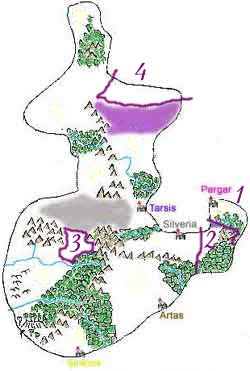
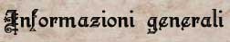

L'Impero Scuro rappresenta la più recente e allo stesso tempo inquietante realtà politica areliana.
Le vicende relative all'Impero ruotano intorno alla storia del Granducato di Karsar, il Granducato fondato dal perfido Ilgadon al termine della "Guerra per le Scogliere".
Nel periodo successivo al 130 p.n. nel Granducato, stremato dall'embargo commerciale e dall'autarchia interna, una comunità di elfi oscuri ha preso tramite abili manovre politiche il sopravvento.
Conseguenza di questa nuova fusione tra la vecchia componente politica umana guidata dalla Casata Valèrian e e la nuova di elfi oscuri guidata dalla Sovrana della Notte del Grande Tempio di Kalian è stata, alla morte del vecchio Granduca Hierdron Valèrian, la proclamazione dell'Impero nel primo giorno di Norio del 156 p.n.
Forte della sua nuova linfa vitale derivante dagli elfi oscuri, ormai usciti allo scoperto, il nuovo ceto dirigente pergariano, ha proceduto ad annettere politicamente al Granducato di Karsar altre tre zone di influenza pergariana.
In base a ciò è possibile ora distinguere il territorio del Granducato di Karsar, totalmente pergariano e sede della capitale imperiale Pergar, dal territorio Imperiale che è costituito da 3 province: Nuova Nembus, Il Massiccio Isolato con la zona di influenza pergariane, Il Nordor Pergariano.
In effetti le Province allo stato attuale, fatta eccezione per Nuova Nembus, sono solo formalmente sotto il controllo diretto imperiale ma in realtà si tratta di zone sulle quali Pergar afferma di avere esclusiva influenza e che cerca di controllare attraverso una serie di nuove istituzioni che spesso però non sono in grado di guidare politicamente le zone a loro sottoposte.
1) Il Granducato di Karsar (Mappa del Granducato)
Unico vero e originario centro della civiltà pergariana il Granducato di Karsar, fondato da Ilgadon, si estende su tutta la Penisola di Shìnaha. Per la sua posizione strategica è crocevia obbligatorio per le navi che vogliono uscire dal Golfo della Civiltà per recarsi sulle coste dei Ducati a Sud.
Questo Granducato (anche chiamato Granducato di Pergar dal nome della capitale che in Argan significa bella di notte , o Granducato Valérian dal nome della famiglia Granducale) è contraddistinto da coste per l’80 % costituite da altissime scogliere rocciose a picco sul mare con la presenza di poche rare le baie che rendono facile l’accesso alla penisola. Lungo le scogliere vi sono moltitudini di grotte e anfratti spesso utilizzate come approdi e basi navali (anche da soggetti dediti alla pirateria). Il clima della penisola è molto rigido, i venti la colpiscono con particolare violenza e le temperature medie sono più basse rispetto alle altre terre che si affacciano sul Golfo della Civiltà. L’inverno è molto freddo e tutta la penisola si copre nei mesi invernali di un manto di neve e ghiaccio con frequenti grandinate. La posizione della penisola è, comunque, strategicamente assai importante in quanto questa separa il Golfo della Civiltà dal Mare dei Venti che si trova a nord e dal Mare delle Tempeste che si trova ad est.
La principale città nonché capitale dell'Impero Scuro è Pergar. Tale parola voleva in Argan, l'antica lingua degli uomini, la Bella di Notte , in quanto la vita notturna era particolarmente bella ed essendo questa situata sulla scogliera, nelle ore notturne, rappresentava una spettacolo mozzafiato essendo illuminata fiaccole. Secondo un detto popolare, infatti, molte persone restarono per ore assorte ad osservare la bellezza di questa città al crepuscolo. Nel periodo attuale, vigendo il coprifuoco, la città ha perso il suo fascino originario ed al suo posto è circondata da un alone di mistero per il quale viene viene chiamata la Città Scura per il caratteristico colore nero dei palazzi ed il famoso colore Nero Pergar che viene prodotto attraverso la macellazione degli oppler, mollusci dal sangue nero che crescono in abbondanza sulle scogliere intorno alla città. Per la sua posizione sulla scogliera la città appare inattaccabile dal mare, la stessa è difesa, inoltre, da una grossa cinta muraria e rappresenta l’ultima tappa possibile per le navi che vogliano uscire dal Golfo della Civiltà di cui quindi controlla l’accesso. I colori predominanti della città sono il nero, il viola ed il blu scuro. Pergar è la città più popolosa del Granducato conterà in tutto, compreso il circondario che include con la terra degli zingari, circa 25000 abitanti .
- La componente umana, numericamente dominante, è retta da un sistema politico molto complesso e formale che rispecchia l'allineamento sociale dominante (Legale Malvagio).
Tale alchimia politica si basa su tre componenti principali:
1) Le famiglie nobiliari, espressione della classe guerriera e combattente, fra le quali domina la Casata Valèrian (di diretta discendenza da Ilgadon) da questa famiglia erano nominati il Granduca (per diritto di nascita) e i vertici delle istituzioni politiche pergariane; la Casata Quarras, seconda come importanza nel Granducato con controllo sulla Contea del Sud; la Casata Simiar con controllo sulla Baronia Blu; la Casata Molgon con controllo sulla Baronia della Lunga Notte.
2) Il Culto del Serpente, culto religioso dominante e settario di grande influenza politica per il proprio Concilio di Vesti Rosse che racchiude personalità di spicco e dalla grande potenza.
3) Il Circolo dei Summoner, potentissima scuola di magia con sede principale a Pergar e centro politico di primario interesse.
- La componente di elfi scuri invece proviene dalla città drow di Endàrial (che nella lingua degli elfi scuri vuole dire la città occulta) situata nelle profondità della terra sotto il Bosco dell'Ululato. La comunità drow si basa su una teocrazia femminile (del Culti di Kalian) in base alla quale la Sovrana della Notte del Grande Tempio di Kalian è anche il capo dello stato drow.
Dall'alleanza fra umani e drow è sorto l'Impero al cui vertice è posta l'Imperatrice che si identifica con Sovrana della Notte del Grande Tempio di Endàrial che è affiancata da una Camera Nobiliare di cui fanno parte tutte le famiglie nobiliari storiche del Granducato (ad eccezione dei Valèrian) e nuovi nobili territoriali riconosciuti nelle nuove province imperiali. Dalla famiglia Valèrian, ormai priva di potere politico di comando, è scelto, secondo il diritto di sangue, l'Imperatore che diviene marito dell'Imperatrice ed ha un ruolo meramente rappresentativo della stessa dinanzi agli umani (vedere l'Imperatrice è quasi impossibile), inoltre dalla Casata Valèrian sono spesso ancora scelti i più alti funzionari imperiali.

2) La Provincia Imperiale del Massiccio Isolato e zone di influenza pergariana.
Alla proclamazione dell'Impero Pergar ha formalmente esteso le sue pretese egemoniche anche al territorio subito a sud del suo confine. Si tratta di diverse zone che comprendono:
a) Le valli a Ovest del Massiccio Isolata, zona di pianura e bassa collina con terre abbastanza fertili. Sono zone poco abitate fatta eccezione per il villaggio halfling chiamata la Piccola Comunità. Questa zona è sempre stata una zona cuscinetto fra la Repubblica Silveriana e il Granducato di Karsar, e risulta abitata da alcune fattorie indipendenti (alcune filo-pergariane e altre filo-silveriane) e da piccole comunità umanoidi. La volontà politica di Pergar di annetterla ha raffreddato molto i rapporti con la storicamente neutrale vicina Repubblica Silveriana che in risposta ha esteso il suo protettorato sulla Piccola Comunità e spesso effettua esercitazioni militari con le proprie legioni in queste valli. Dal canto suo Pergar oltre ad incentivare l'insediamento di comunità agricole nella zona ha creato solo un avamposto chiamato Campo Imperiale che funge da base commerciale e base per pattugliamenti ed esercitazioni militari.
b) Il Massiccio Isolato, ammasso montuoso grande ed imponente, di cui il 70% risulta poco esplorato, non civilizzato e in mano a creature ostili. Il Massiccio risulta di vitale importanza strategica per Pergar per poter creare una estrema difesa a sud arroccata sui monti e per le materie prime di cui il Massiccio è molto ricco. Nella zona nord del massiccio vi sono alcune rocche e torri indipendenti alcune filo pergariane (come la Rocca di Hairan della Baronia del Corvo Nero) e altre realmente indipendenti (come la Rocca di Muzon) costruite da Casate non legate alla politica dei grandi stati del Sud-Arelia. In questa zona l'attività pergariana si è intensificata anche grazie all'istituzione di Base Vittoria al confine sud dalla quale partono numerose spedizioni di avventurieri pergariani per esplorare il Massiccio e fare esperienza. La parte sud del Massiccio invece è inesplorata e sede di alcune grandi roccaforti naniche (come quella di Breel Manòt) che vedono di cattivo occhio l'estendersi della longa manus imperiale sulle loro terre.
b) La Grande Foresta della Penisola. E' chiamata così una delle più grandi foreste areliane, che partendo a sud dal confine del Granducato di Trisengard raggiunge dopo circa 200 km. i confini pergariani. La parte di foresta che dopo il Fiume Verde si estende fino alla Contea del Sud prende il nome di Grande Foresta del Sud. E' una foresta fittissima ed inesplorata, eccezion fatta per le zone che confinano con i grandi stati a nord e a sud, abitata da creature di ogni genere è anche famosa per la presenza di un certo numero di draghi verdi che dalla stessa partono in volo per cacciare sul Massiccio Isolato o nelle valli attorno alla foresta.
3) La Provincia Imperiale di Nuova Nembus
Situata a Nord dei Territori Semi-Umani subito a ridosso delle Terre Selvagge, la cittadella di Nembus e il suo castello erano originariamente parte della Baronia dell'Ape legata, anche se indipendente, da vincoli di amicizia al Regno di Tarsis. In tale cittadella venne fondata dal mago Indaral una scuola di magia di modeste proporzioni chiamata l'Accademia del Cigno d'Argento.
Poichè l'accademia di magia aveva un'influenza notevole in una comunità così piccola, sfruttando l'assenza di Indaral, uno dei più potenti e malvagi maestri della scuola, Ilgar del Cigno Nero con l'aiuto di alcuni suoi adepti, tra i quali Dagon del Cigno d'Acqua e Venusia del Ciglio Viola, in una notte di follia e morte si portò al comando della cittadella. In tale sua impresa fu aiutato da una setta segreta del Culto del Serpente di cui facevano parte la maggioranza dei cospiratori e dal Comandante delle Guardie del castello che stanco dell'assenza del Barone dell'Ape (il quale trascorreva il suo tempo nella bella Tarsis sperperando le tasse per lui raccolte nella Baronia) sognava gloria e onore.
Una volta conquistata la cittadella, Ilgar, ormai chiaramente rinnegato anche dal Circolo del Potere come anche i suoli allievi, si nominò Borgomastro di Nuova Nembus e si sottomise al potere Pergariano per ottenere ausilio e protezione. Pergar accettò tale proposta riconobbe Nuova Nembus come realtà politica vassalla e inviò con uno storico viaggio di circumnavigazione una propria armata a presidiare il castello di Nembus.
Alla nascita dell'Impero Nuova Nembus fu eletta a provincia Imperiale e Ilgar, ormai molto anziano, nominato nobile territoriale (con titolo di Barone) fondatore della Casata del Cigno Nero.
4) La Provincia del Nordor Pergariano (Mappa del Nordor Pergariano)
Durante il periodo di stretta autarchia e isolamento politico da parte degli Stati appartenenti alla Confederazione del Sud-Arelia, Pergar cercò di soddisfare la propria mancanza di materie prime attraverso il contatto con alcune popolazioni della zona Nord-Est del Nordor che nonostante isolate risultavano produttrici di materie prime, schiavi e soldati umanoidi da federare. I contatti di Pergar con queste zone di intensificarono con il tempo e con questi anche i contatti con quelle creature, le Ombre Scure, che in nome di un fantomatico Signore del Nordor con il terrore e la violenza reggevano i rapporti di forza in un Nordor selvaggio e dominato da creature violenti e sanguinarie.
A seguito dei primi accordi commerciali in base ai quali Pergar riceveva materie prime in cambio di prodotti di alta manifattura pergariana (in particiloare armi, navi) e know how in campo magico e scientifico, si posero le basi per un accordo politico in base al quale il Signore del Nordor avrebbe tollerato la presenza Pergariana in quella zona del Nord-Est del Nordor e Pergar avrebbe riconosciuto lo stesso come potere reale del Nordor, autorizzando anche la costruzione di un'ambasciata dello stesso a Pergar con la presenza permanente di un ambasciatore (Ombra Oscura). Pergar ha quindi preso la gestione di quei territori affiancando ai dominatori locali (sotto controllo del Signore del Nordor) una classe politica pergariana con funzioni di sviluppo e consultive. Inoltre Pergar ha avuto la possibilità di creare alcune basi commerciali nella zona (come il fondamentale Porto Tempestoso).
L'Impero ha quindi riconosciuto alcuni nobili locali come nobili territoriali dell'Impero (si pensi alla Casata degli Akkan con il titolo di Duca, la Casata della Tarantola Viola con il titolo di Conte, la Casata del Teschio Nero con il titolo di Conte, la Casata dell'Ascia Insanguinata con il titolo di Conte, la Casata del Drappo Nero con il titolo di Barone, la Casata della Punta con il titolo di Barone).